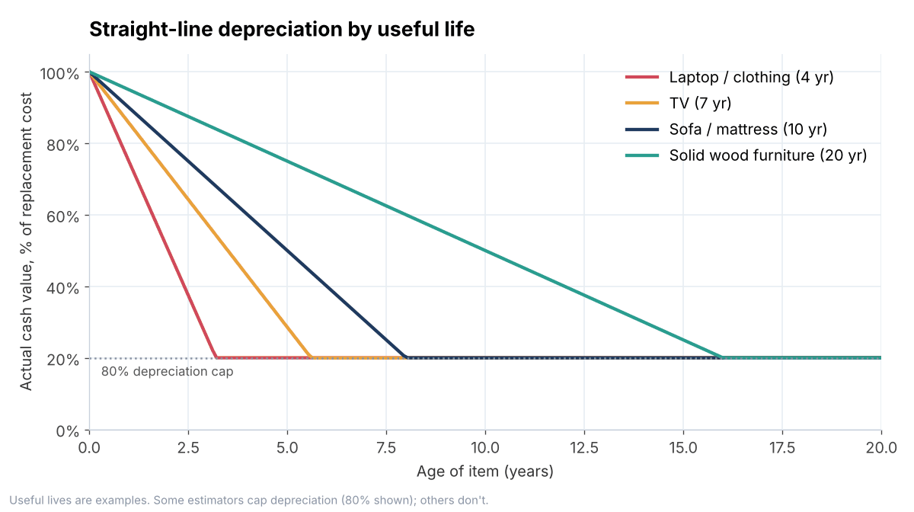
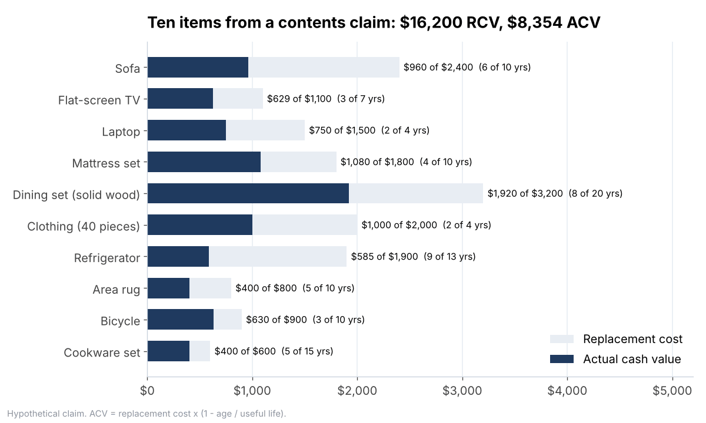
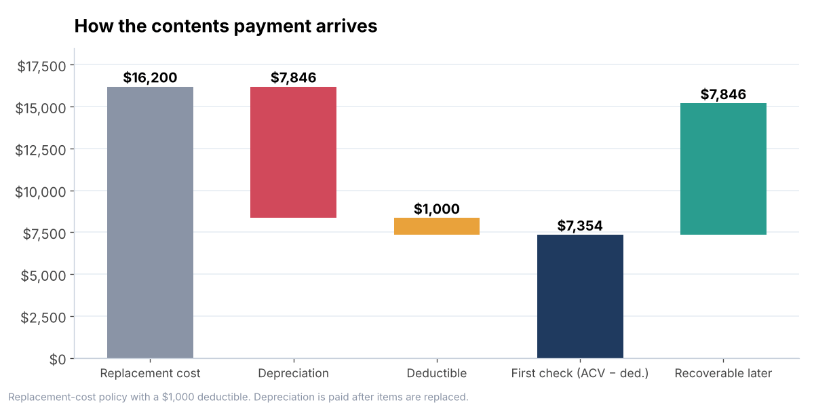

Depreciation on a contents claim: useful life, the math, and what you can dispute
The first check on a contents claim is usually smaller than people expect, sometimes about half of what they think they're owed. The difference is depreciation. Even on a replacement-cost policy, insurers typically pay the depreciated value first and the rest only after you replace the items. On an actual cash value policy, the depreciated value is all you get.
This chapter explains how adjusters calculate depreciation on personal property, line by line: useful life tables, straight-line math, condition adjustments, and depreciation caps. Then it works through a ten-item example from replacement cost to final payment, and covers what you can reasonably dispute.
The basic formula
Most contents estimates use straight-line depreciation:
Depreciation % = age ÷ useful life
Actual cash value (ACV) = replacement cost × (1 − depreciation %)
Replacement cost is today's price for a new item of like kind and quality. Not what you paid years ago, and not a premium upgrade. Useful life is how long that type of item is expected to last, from a depreciation table. Age is how long you've owned it, or how old it was if you bought it used.
A sofa with a $2,400 replacement cost, a 10-year useful life, and an age of 6 years:
- Depreciation: 6 ÷ 10 = 60%
- ACV: $2,400 × 40% = $960

Useful life: where most of the money is
Insurers and estimating software use depreciation tables that assign a useful life to each category. Values vary between tables. These are typical examples:
| Category | Typical useful life |
|---|---|
| Laptops, phones, tablets | 3–5 years |
| Clothing (general) | 3–5 years |
| Televisions | 6–8 years |
| Upholstered furniture, mattresses | 8–12 years |
| Major appliances | 10–15 years |
| Cookware, small kitchen items | 10–15 years |
| Solid wood furniture | 15–25 years |
| Fine art, antiques, collectibles | Often not depreciated |
The useful life chosen for an item changes the payment more than anything else. A five-year-old dining set at a 10-year life is 50% depreciated. At a 20-year life it's 25% depreciated. If an item is better quality than its category suggests, ask which table and category the adjuster used.
Condition adjustments
Some estimates adjust depreciation for condition: less for an item kept in excellent condition, more for one in poor condition. If an item was barely used, such as a guest-room mattress or holiday dishes, say so and send photos.
Depreciation caps
Some estimating practices cap depreciation, often at 50% to 80%, so even an old item keeps some value. Others don't, and a very old item can drop close to zero. Ask whether a cap applies to your claim.
A ten-item example
A small kitchen fire spreads smoke and soot through the house. These ten items are total losses:
| Item | Replacement cost | Useful life | Age | Depreciation | ACV |
|---|---|---|---|---|---|
| Sofa | $2,400 | 10 yrs | 6 yrs | 60% | $960 |
| Flat-screen TV | $1,100 | 7 | 3 | 43% | $629 |
| Laptop | $1,500 | 4 | 2 | 50% | $750 |
| Mattress set | $1,800 | 10 | 4 | 40% | $1,080 |
| Dining set (solid wood) | $3,200 | 20 | 8 | 40% | $1,920 |
| Clothing (40 pieces) | $2,000 | 4 | 2 | 50% | $1,000 |
| Refrigerator | $1,900 | 13 | 9 | 69% | $585 |
| Area rug | $800 | 10 | 5 | 50% | $400 |
| Bicycle | $900 | 10 | 3 | 30% | $630 |
| Cookware set | $600 | 15 | 5 | 33% | $400 |
| Total | $16,200 | 48% | $8,354 |

How the payment arrives
On a replacement-cost policy with a $1,000 deductible:
- First payment: ACV minus the deductible = $8,354 − $1,000 = $7,354
- Held back: the depreciation, $7,846, is recoverable. You get it after you replace the items and send proof of what you spent.
- Total, if everything is replaced: $7,354 + $7,846 = $15,200, which is replacement cost minus the deductible.

On an actual cash value policy, the $7,354 is the full payment. That's one of the biggest practical differences between the two kinds of policy.
Recoverable depreciation usually has a deadline. Many policies require you to replace items within a set period, often 180 days to two years, to claim the held-back amount. Recover it item by item as you replace things. You don't have to wait until everything is done.
What you can reasonably dispute
- The replacement price. It should be for like kind and quality, from a real current source. If the adjuster priced a cheaper item, send a link to a true equivalent.
- The useful life or category. If an item was mis-categorized (solid wood furniture listed as particleboard, say), ask for the correct category.
- The age. Bank or card records can prove a more recent purchase date.
- Condition. Photos of items in excellent condition can support a lower depreciation rate.
- Depreciation on items that shouldn't be depreciated. Some states restrict depreciating labor, and some items, such as antiques and collectibles, often hold or gain value.
- Missed items. A home inventory recovers more than any dispute.
Put disputes in writing, line by line, with evidence. A spreadsheet with your proposed figures next to the adjuster's makes the conversation faster.
Pricing like kind and quality
The replacement cost on each line drives everything else, so it's worth checking. Adjusters usually price from current retail sources. Three common problems:
- Downgrades. A 7-piece solid maple dining set priced as a 5-piece veneer set from a discount store.
- Old prices. A price taken from what you paid years ago rather than today's cost.
- Missing parts of a set. A sectional sofa priced as one piece, or a bedroom set without the dresser.
For each disputed line, send one or two current links to products that genuinely match: same material, size, and quality tier. If the original is no longer made, find the closest current equivalent and explain the match in a sentence.
Sales tax and delivery
On a replacement-cost policy, sales tax and reasonable delivery charges are generally part of replacement cost. Some states require insurers to include sales tax in the ACV payment as well. On a $16,200 contents claim, 8% sales tax is $1,296, so check whether it appears on your estimate and how it's handled.
Building your own depreciation sheet
You don't need estimating software to check the math. A spreadsheet with these columns is enough:
| Column | Formula or source |
|---|---|
| Item, room, quantity | Your inventory |
| Replacement cost (RCV) | Current price for like kind and quality |
| Useful life (years) | Adjuster's table, or a reasonable value |
| Age (years) | Purchase records |
| Depreciation % | =MIN(age / life, cap) |
| ACV | =RCV × (1 − depreciation %) |
| Recoverable depreciation | =RCV − ACV |
Line it up next to the adjuster's estimate. Disputes then become specific: "line 14, life 10 vs. 20 years," instead of "the check is too low."
Frequently asked questions
Why does my replacement-cost policy pay ACV first? To make sure you actually replace the items. The difference is paid when you show the replacement was made.
What if I don't want to replace an item? On most replacement-cost policies you keep the ACV payment and give up the recoverable depreciation for that item.
Can I replace an item with something different? Usually yes, and you're paid up to what a like-kind replacement would have cost. Spending more is fine but won't increase the payment.
Are food and consumables depreciated? Usually not. Spoiled food and similar consumables are typically paid at replacement cost, often with a small separate limit.
Sources and further reading
- Insurance Information Institute: Replacement cost vs. actual cash value
- National Association of Insurance Commissioners: Consumer insurance resources
- United Policyholders: Contents claim tips
Hypothetical claim. Useful lives and depreciation practices vary by insurer and state. General information only, not insurance advice.